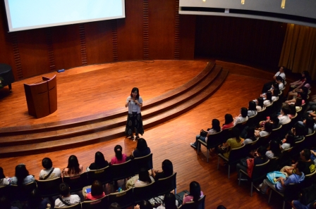
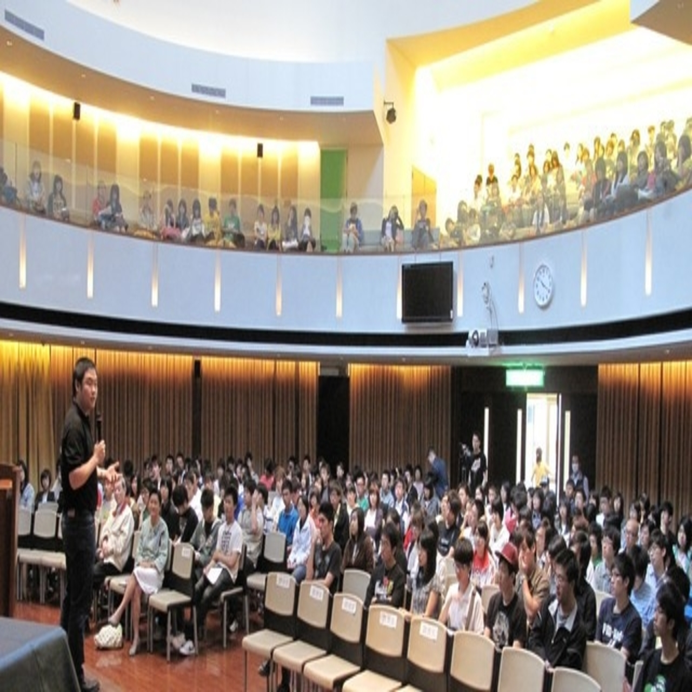
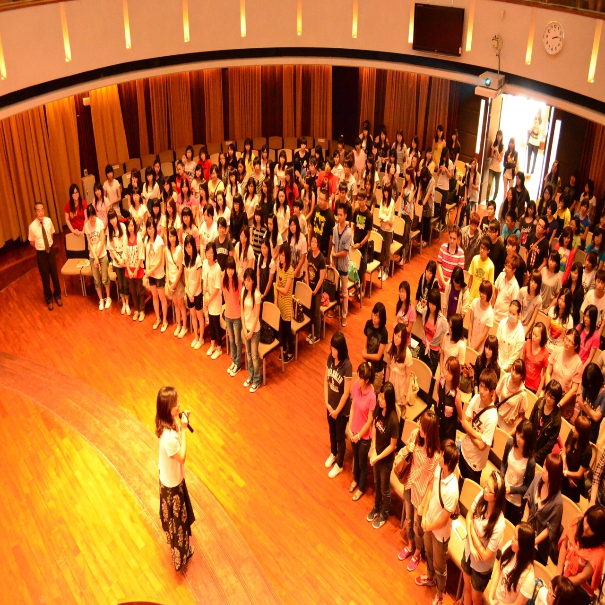
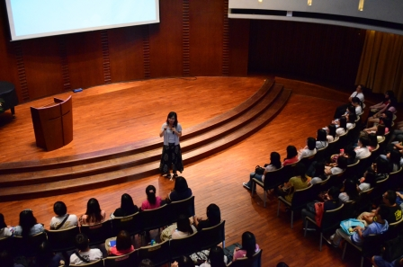
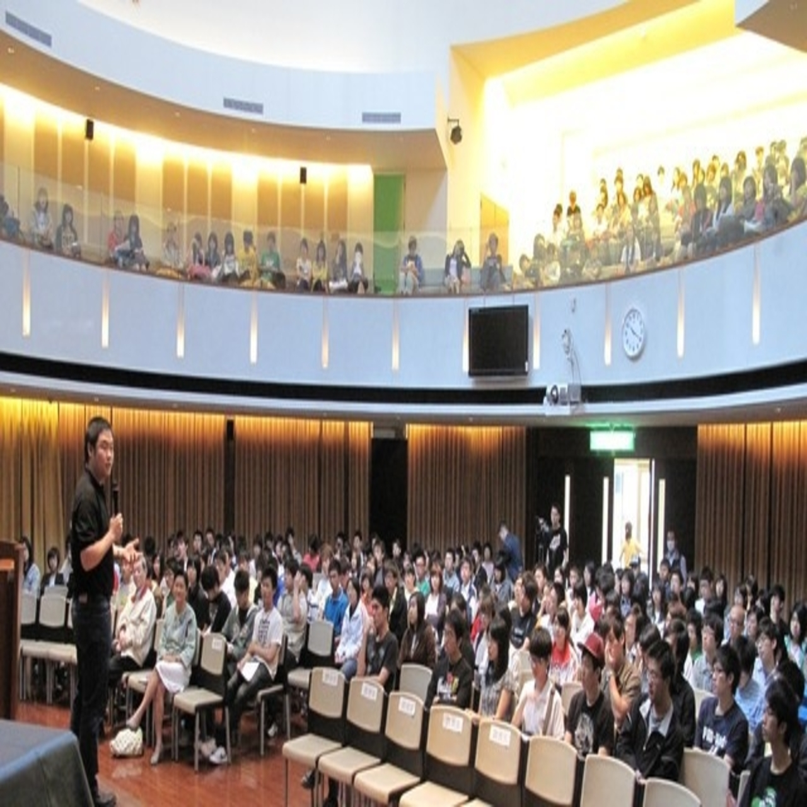
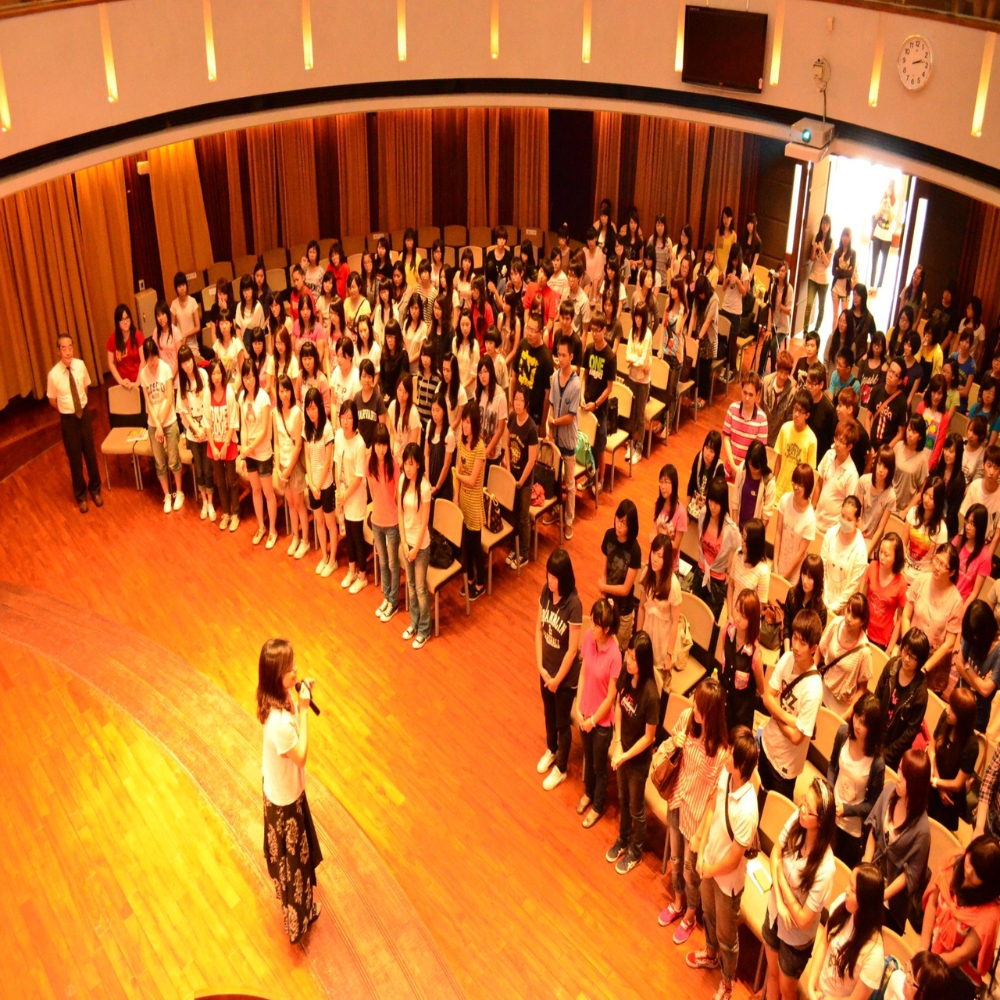

「講座」
中原大學邀請各領域重量級學者專家，內容含括人文、科 技、藝術、傳播等多面向主題對話，期望以全人講學平臺之方式，培育學生成為具有深刻人 文藝術涵養與科學應用能力的現代知識分子，深耕本校全人教育
專業倫理大師系列 |
|||
| 活動名稱 | 活動時間 | 活動地點 | 演講者 |
| 倫理可不可以教 | 06/10 15:00-17:00 | 圖書館101 | 羅秉祥 |
| 性的困擾 | 06/11 10:00-12:00 | 全人618 | 羅秉祥 |
| 道德兩難，難在哪裡 | 06/12 10:00-12:00 | 圖書館普仁小集 | 羅秉祥 |
| 基因編輯的哲學和倫理問題 | 06/12 15:10-17:00 | 圖書館秀德廳 | 羅秉祥 |
| 正義、關懷：道德思考的兩性差異？ | 06/14 10:00-12:00 | 圖書館秀德廳 | 羅秉祥 |
|
|
|||
全人博雅講壇 |
|||
| 活動名稱 | 活動時間 | 活動地點 | 演講者 |
| 十八歲的探險和養成 | 03/27 15:10-17:00 | 圖書館秀德廳 | 劉克襄 |
| 在物理學的金字塔爬上又爬下 | 04/24 15:10-17:00 | 圖書館秀德廳 | 施奇廷 |
| 我的人生就像搞不定的麻煩事 | 05/15 15:10-17:00 | 圖書館秀德廳 | 眭澔平 |
| 基因編輯的哲學和倫理問題 | 06/12 15:10-17:00 | 圖書館秀德廳 | 羅秉祥 |
|
|
|||
人文講座 |
|||
| 活動名稱 | 活動時間 | 活動地點 | 演講者 |
| 經典與人的互動 | 04/23 15:10-17:00 | 全人村瑞麗堂 | 呂妙芬 |
|
|
|||
人生講座 |
|||
| 活動名稱 | 活動時間 | 活動地點 | 演講者 |
| 聽我唱奇妙愛 | 03/13 10:10-11:00 | 校牧室 | 施孝榮 |
| 從零開始的勇氣 | 03/27 10:10-11:00 | 校牧室 | 吳靜怡 |
| 飄向北方 | 04/03 10:10-11:00 | 校牧室 | 謝品然 |
| Making your life count in the worldwe live in | 04/24 10:10-11:00 | 校牧室 | 史艾瑞克 |
| 和你想的不一樣~介紹樂山教養院 | 05/01 10:10-11:00 | 校牧室 | 張嘉芳 |
| 天人合一 | 05/08 10:10-11:00 | 校牧室 | 范大陵 |
| 平凡中的幸福 | 05/15 10:10-11:00 | 校牧室 | 吳志超 |
| 細語入我心 | 05/22 10:10-11:00 | 校牧室 | 中原大學教職員詩班 |
| 學習的目的 | 05/29 10:10-11:00 | 校牧室 | 楊坤原 |
| 做夢、尋夢到築夢~原來都是超完美計畫 | 06/05 10:10-11:00 | 校牧室 | 溫芳玲 |
展開